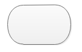

Yet Another Basic programming
便利ツール
▼
便利なツール
クリックして使えるよ
リセット
空白を埋める
ヒント非表示
フローチャート
▼

テスト中...まだ構成中です
その他ページ
▼
初学者用
(
しょがくしゃよう
)
ページ
公式
(
こうしき
)
サイト
EV3(
理科総合用
(
りかそうごうよう
)
)
アンケート
ページ更新
初
(
はじ
)
めての
方
(
かた
)
へ
※このページはFirefox(推奨)またはChrome、IEで動作させてください(Safariは出来ません)
公式集
1. 公式①
2. 公式②
3. 公式③
4. 公式③-1
5. 公式④
問題集(テスト中)
問題①
問題②
問題③
ここで
学習
がくしゅう
しよう(
上
うえ
のボタンを
押
お
して
選択
せんたく
しよう)
実行
(
じっこう
)
結果
(
けっか
)
画面
(
がめん
)
・プログラムを
書
(
か
)
く
実行
(
じっこう
)
保存
(
ほぞん
)
開
(
ひら
)
く
サンプルを開く
デモ
____________________________________________
(製作者の)テスト
print文(改行)
キャラクターコード取得
足し算してみよう
____________________________________________
やってみよう(学習サイト連動)
2-3.ターミナル
test5
test6
test7
Hangman
Catch the Raindrop
JOT (
Mini Indy
実行結果